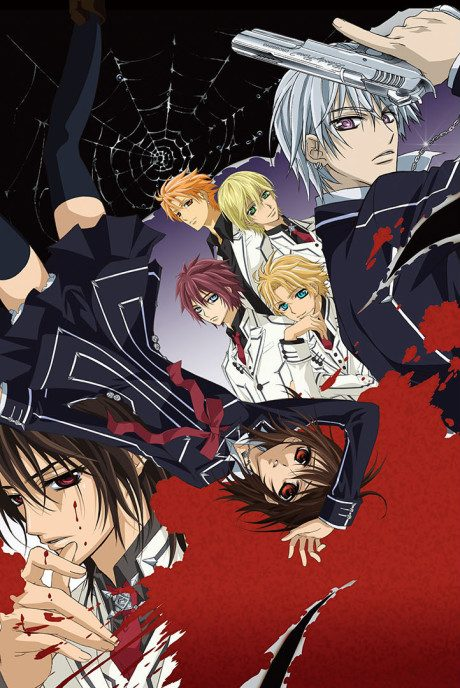

Vampire Knight
ヴァンパイア騎士
After the anime, read the manga from Chapter 47.
6.2AniList score
—Animeter, no votes yet
26episodes, 2 seasons
Rate it or report where you stopped
Anime finished. Where does the manga pick up?
Start at Chapter47
The anime, including Guilty, ends at chapter 46, so start at chapter 47 (volume 10). The anime only covers about the first half of the manga.
146108 end
Vampire Knight + GuiltyStart reading here